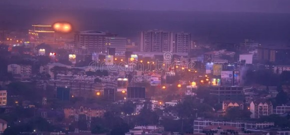

City Contrast

The contrast of modern and traditional in Nairobi



Your Nairobi images are now displayed above. If you can't see them, please check:
articles/images/nairobi/To open with a local server, run this command in the project folder: python -m http.server 8000 then visit http://localhost:8000/nairobi-simple.html